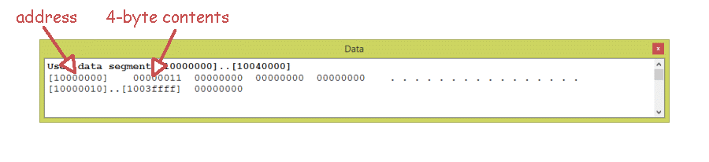

The assembler in SPIM automatically assembles code starting at address 0x10000000.
x?
0x10000000poly?
0x10000004Here is what this part of the SPIM simulation looks like:
On this little endian machine, the bit pattern 0x00000011 is stored at address 0x10000000.
The byte 0x11 is stored at the address 0x10000000, which for display purposes is on the right of the first four-byte group. This makes reading 32-bit values easy to read with our usual left to right reading style.
The program must load a register with data from memory, and, at the end, store a result back to memory. The above program fragment does this, when you complete it.
The register use table in the documentation summarizes how registers are used in this program. When you program, decide on the registers you need and what they are used for. Then write down your decisions! This is crucial for getting things correct.
A register where a value is built up after several calculations is called an accumulator. (Some old processors have a single, special register that is used for this purpose. But MIPS has many general purpose registers for this).
Remember that data loaded from memory is not
available to the instruction following the load.
The instruction after a
lw,
in the "load delay slot",
should not try to use the loaded data.
Fill in the blanks.
Look at the previous answer to help with
the lui instruction.
Use it to load the upper half of the base register with
the upper half of the first data address.